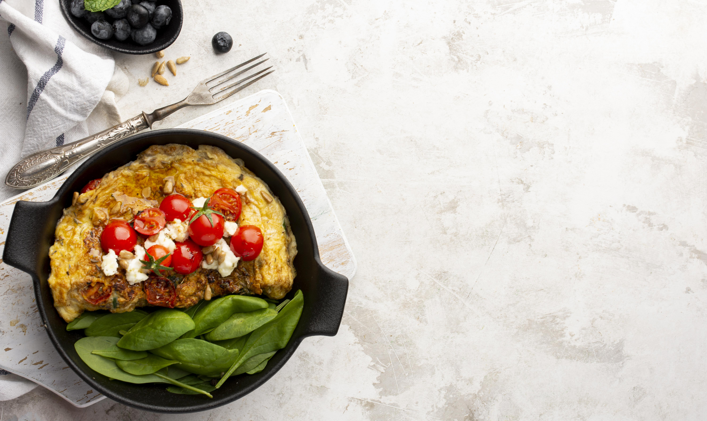

Back to homepage
Oatmeal Omelette

Description:
the main advantage of this recipe is that it's very delicious
and full of nutrients to power up your entire day while also being
really fast to cook. Let's look into it!
Ingredients:
- 50g Rolled oats
- 2 Chicken eggs (medium)
- 60g Milk of preference
- 20g Water
- Fruit and vegetables of your choice
Steps:
- Preheat a skillet on a medium heat;
- Mix together all the ingredients (except for the veggies),
whick with a spoon;
- Pour everything onto the preheated skillet, cover with a lid
and leave for 3-5 minutes
- When the surface of the omelette starts to get bubbly, wait for
another minute, then turn the heat off and move it from the skillet
onto a plate;
- Server with fruit, vegetables, and spices of your own preference;
- Enjoy the course with a cup of hot tea or on its own!